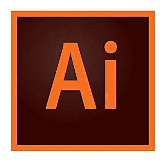
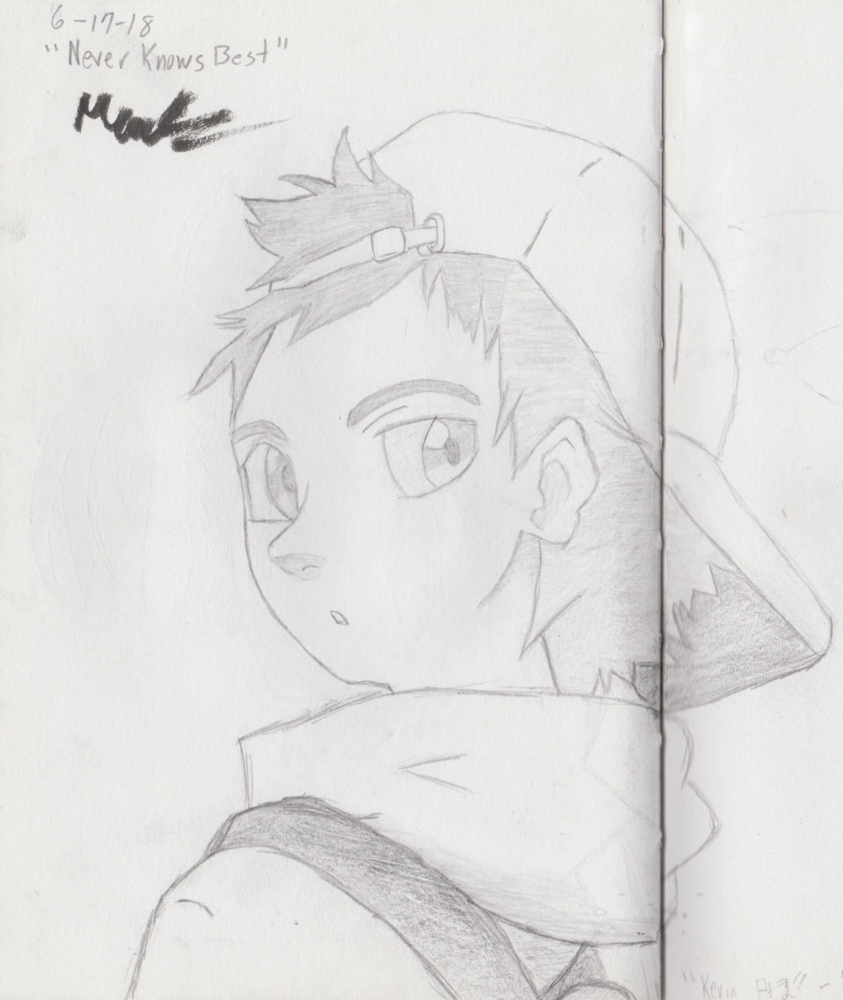

MF DOOM is a London based MC, who has interesected rap and comic culture, which I relate to as I have similar interests.
Picture 7
I entered CSTEP in my freshman year, and as a program they have given me opportunities that I would have not had, had I not joined.
Picture 8

Adobe is challenging, yet essential in my transition from hand drawn pictures to digital artwork. I've spent hours just learning how to use the program, which is both difficult but enjoyable.
Picture 9
Arguably the app I use the most. Whenever I feel the need to destress or be informed of news, I use twitter.
Picture 10

This year I discovered a love for drawing, while this drawing isn't perfect, it is a representation of my desire to continue to learn about the art and to continue learning. Go Back